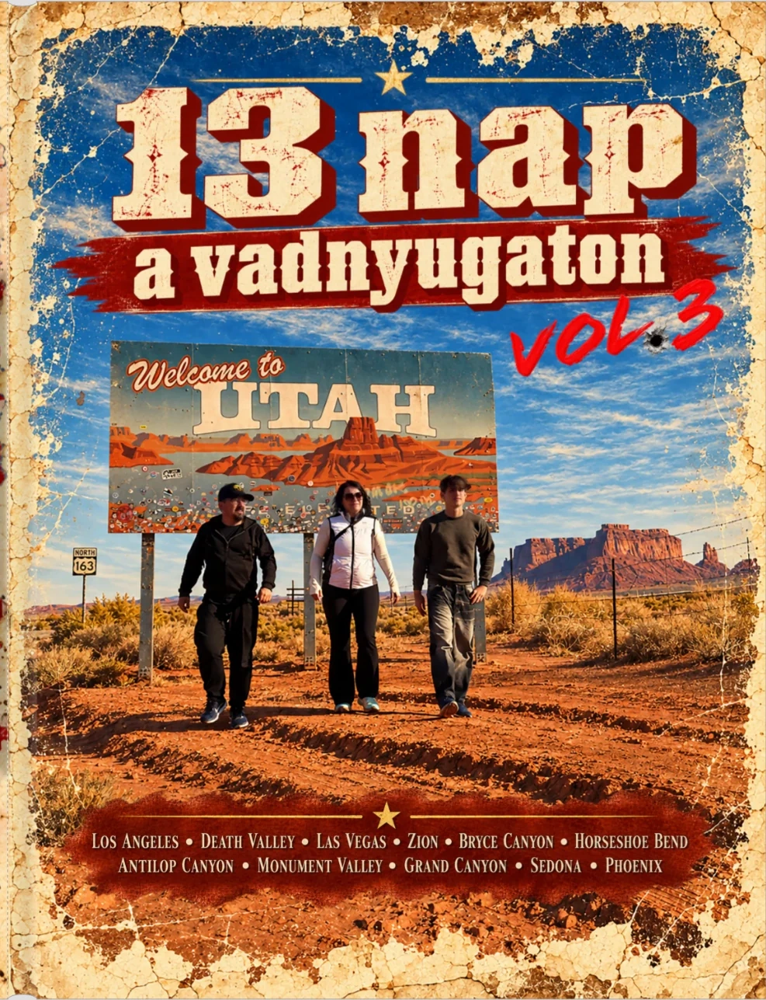
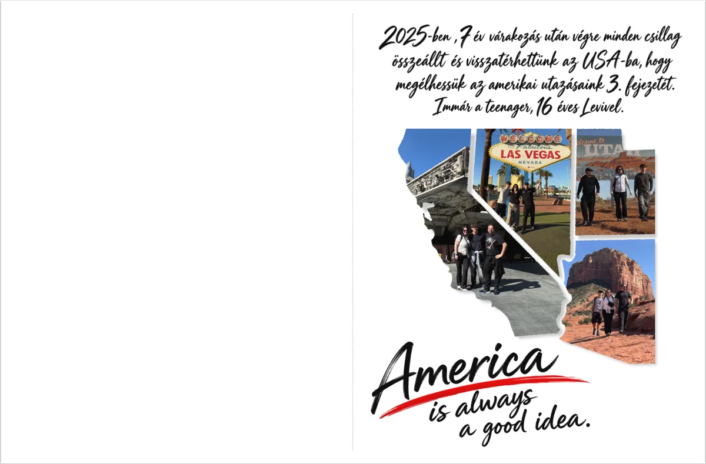
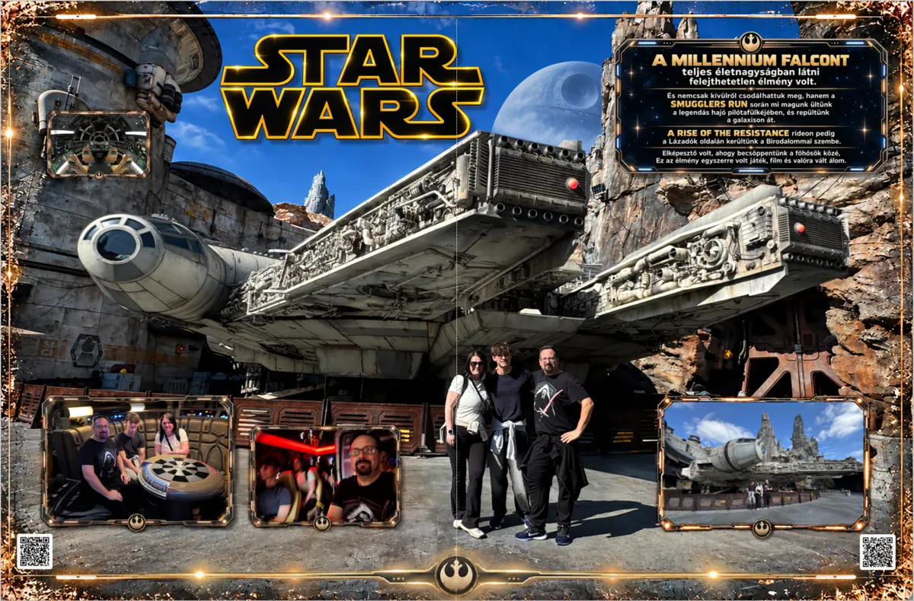

2025 · Los Angeles → Phoenix · California · Nevada · Utah · Arizona
Lapozd át a fotókönyvet, játssz velünk, nézd meg az útitervet vagy fedezd fel a videókat!
Lapozd újra a kalandot!
Az oldalpárok eredeti grafikával. Használd a nyilakat, vagy kattints a nagyításhoz. A lapfordítás animált, a képeken nem változtatunk.

A nagyításhoz kattints a képre. A billentyűzet ← → nyilai is lapoznak.
Két térkép · egy vadnyugati kaland
Három helyes válasz után a fehér Ford továbbhalad a következő számozott állomásig. Előbb Los Angeles öt megállója, aztán a nagy vadnyugati térkép 13 állomása következik.

Az eredeti útiterv
A 13 nap teljes, eredeti útiterve, a helyesírási hibák javításával és a pontosított springdale-i szállásnévvel. A repülőjegy-foglalási azonosítót biztonsági okból kihagytuk. A mellékelt képek, linkek és ismertetők külön, kiegészítésként szerepelnek.
Videók és 360°-os kalandok
A 35 saját YouTube-videó két gyűjteményben, az utazás sorrendjében. Kattints az előnézeti képre: a film itt, a weboldalon belül indul el. Külön megnyitható a YouTube-on is.